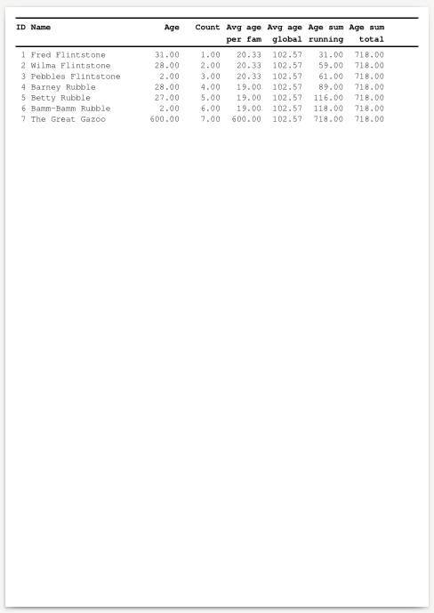

This example below exercises report variables and breaks. Breaks use changes in a data series, like a different last name. For more information, see Breaks.
Data is created as follows in the same database using the same user as the first example.
create table flintstones3 (id serial, firstname text, lastname text, age int);
insert into flintstones3 (firstname, lastname, age)
values
('Fred', 'Flintstone', 31),
('Wilma', 'Flintstone', 28),
('Pebbles', 'Flintstone', 2),
('Barney', 'Rubble', 28),
('Betty', 'Rubble', 27),
('Bamm-Bamm', 'Rubble', 2),
('The Great', 'Gazoo', 600);
The data looks like this when queried:
ocrpttest=> select * from flintstones3; id | firstname | lastname | age ----+-----------+------------+----- 1 | Fred | Flintstone | 31 2 | Wilma | Flintstone | 28 3 | Pebbles | Flintstone | 2 4 | Barney | Rubble | 28 5 | Betty | Rubble | 27 6 | Bamm-Bamm | Rubble | 2 7 | The Great | Gazoo | 600 (7 rows)
The program code is identical to the second and third examples, except that it uses a different report XML description.
#include <stdio.h>
#include <opencreport.h>
int main(int argc, char **argv) {
opencreport *o = ocrpt_init();
ocrpt_datasource *ds = ocrpt_datasource_add_postgresql(o, "pgsql", NULL, NULL, "ocrpttest", "ocrpt", NULL);
ocrpt_query_add_postgresql(ds, "q", "select * from flintstones3;");
if (!ocrpt_parse_xml(o, "example4.xml")) {
printf("XML parse error\n");
ocrpt_free(o);
return 0;
}
ocrpt_set_output_format(o, OCRPT_OUTPUT_PDF);
ocrpt_execute(o);
ocrpt_spool(o);
ocrpt_free(o);
return 0;
}
Here's the equivalent program code in PHP.
<?php
$o = new OpenCReport();
$ds = $o->datasource_add_postgresql("pgsql", NULL, NULL, "ocrpttest", "ocrpt", NULL);
$ds->query_add("q", "select * from flintstones3;");
if (!$o->parse_xml("example4.xml")) {
echo "XML parse error" . PHP_EOL;
exit(0);
}
$o->execute();
$o->spool();
Here's the equivalent program code in PHP, using the RLIB compatibility functions.
<?php
$r = rlib_init();
rlib_add_datasource_postgres($r, "pgsql", "dbname=ocrpttest user=ocrpt");
rlib_add_query_as($r, "pgsql", "select * from flintstones3;", "q");
if (!rlib_add_report($r, "example4.xml")) {
echo "XML parse error" . PHP_EOL;
exit(0);
}
rlib_execute($r);
rlib_spool($r);
The program code uses this file contents
from example4.xml.
<?xml version="1.0"?>
<!DOCTYPE OpenCReport SYSTEM "opencreport.dtd">
<OpenCReport>
<Report query="q">
<Variables>
<Variable name="var1" value="id" type="count" />
<Variable name="var2" value="age" type="average" precalculate="yes" resetonbreak="family" />
<Variable name="var3" value="age" type="average" precalculate="yes" />
<Variable name="var4" value="age" type="sum" />
<Variable name="var5" value="age" type="sum" precalculate="yes" />
</Variables>
<Breaks>
<Break name="family">
<BreakFields>
<BreakField value="lastname" />
</BreakFields>
</Break>
</Breaks>
<Detail>
<FieldHeaders>
<Output>
<HorizontalLine size="2" color="'black'" />
<HorizontalLine size="2" color="'white'" />
<Line bold="yes">
<literal width="2" align="'center'">ID</literal>
<literal width="1"/>
<literal width="20">Name</literal>
<literal width="1"/>
<literal width="8" align="'right'">Age</literal>
<literal width="8" align="'right'">Count</literal>
<literal width="8" align="'right'">Avg age</literal>
<literal width="8" align="'right'">Avg age</literal>
<literal width="8" align="'right'">Age sum</literal>
<literal width="8" align="'right'">Age sum</literal>
</Line>
<Line bold="yes">
<literal width="2"/>
<literal width="1"/>
<literal width="20"/>
<literal width="1"/>
<literal width="8"/>
<literal width="8"/>
<literal width="8" align="'right'">per fam</literal>
<literal width="8" align="'right'">global</literal>
<literal width="8" align="'right'">running</literal>
<literal width="8" align="'right'">total</literal>
</Line>
<HorizontalLine size="2" color="'white'" />
<HorizontalLine size="2" color="'black'" />
<HorizontalLine size="2" color="'white'" />
</Output>
</FieldHeaders>
<FieldDetails>
<Output>
<Line>
<field width="2" align="'right'" value="id" />
<literal width="1" />
<field width="20" value="firstname + ' ' + lastname" />
<literal width="1"/>
<field width="8" value="age" format="'%.2d'" align="'right'" />
<field width="8" value="v.var1" format="'%.2d'" align="'right'" />
<field width="8" value="v.var2" format="'%.2d'" align="'right'" />
<field width="8" value="v.var3" format="'%.2d'" align="'right'" />
<field width="8" value="v.var4" format="'%.2d'" align="'right'" />
<field width="8" value="v.var5" format="'%.2d'" align="'right'" />
</Line>
</Output>
</FieldDetails>
</Detail>
</Report>
</OpenCReport>
